Diversité phylogénétique de l'assiette
Name of the recipe: Blanquette de veau facile
URL of the recipe: https://www.marmiton.org/recettes/recette_blanquette-de-veau-facile_19219.aspx
Number of ingredients: 10
Number of specie found for the ingredients: 6
Ingredients that haven't match with a species: Cube de bouillon, Bouillon de poule, Farine...
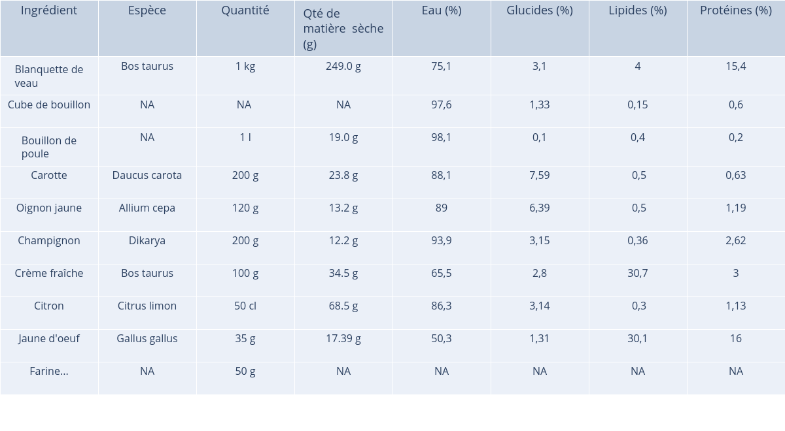
Phylogenetic diversity: 234.0
Weighted phylogenetic diversity: 33.58
Shannon's index: 2.16
Simpson's index: 0.83
Name of the recipe: Lasagnes à la bolognaise
URL of the recipe: https://www.marmiton.org/recettes/recette_lasagnes-a-la-bolognaise_18215.aspx
Number of ingredients: 12
Number of specie found for the ingredients: 10
Ingredients that haven't match with a species: Eau, Muscade...
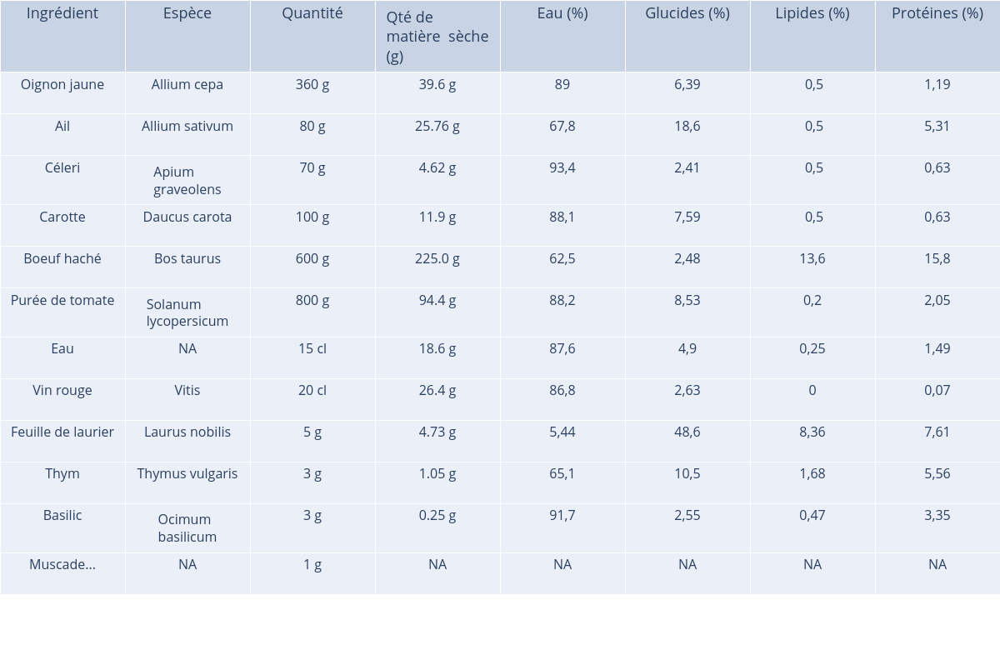
Phylogenetic diversity: 221.56
Weighted phylogenetic diversity: 33.46
Shannon's index: -0.1
Simpson's index: 6.27
Name of the recipe: Filet mignon en croûte
URL of the recipe: https://www.marmiton.org/recettes/recette_filet-mignon-en-croute_14407.aspx
Number of ingredients: 5
Number of specie found for the ingredients: 4
Ingredients that haven't match with a species: -
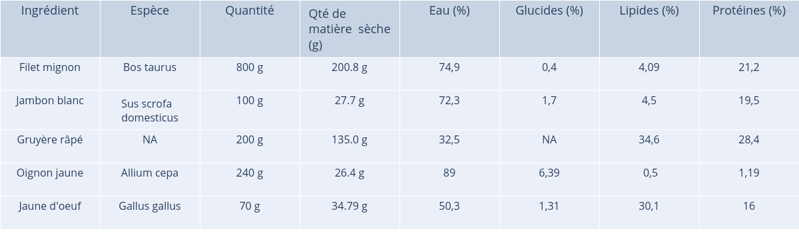
Phylogenetic diversity: 142.0
Weighted phylogenetic diversity: 23.85
Shannon's index: 0.26
Simpson's index: 3.91
Name of the recipe: Les Timbales de Jeanne (saumon à la mousse de courgettes au micro-ondes)
URL of the recipe: https://www.marmiton.org/recettes/recette_les-timbales-de-jeanne-saumon-a-la-mousse-de-courgettes-au-micro-ondes_21864.aspx
Number of ingredients: 9
Number of specie found for the ingredients: 8
Ingredients that haven't match with a species: Sel
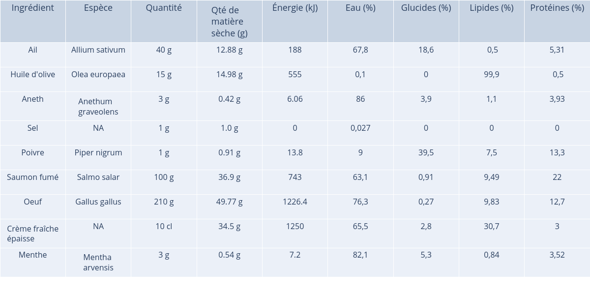
Phylogenetic diversity: 267.43
Weighted phylogenetic diversity: 38.98
Shannon's index: 1.72
Simpson's index: 0.54
Name of the recipe: Sauté de veau au chorizo
URL of the recipe: https://www.marmiton.org/recettes/recette_saute-de-veau-au-chorizo_17027.aspx
Number of ingredients: 8
Number of specie found for the ingredients: 6
Ingredients that haven't match with a species: Bouquet garni, Huile
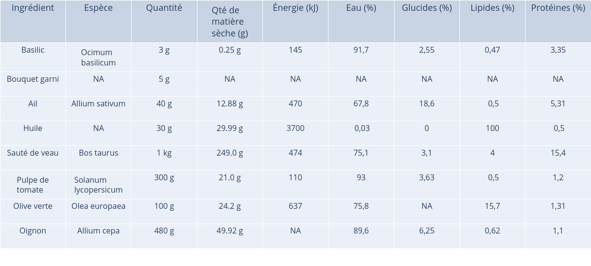
Phylogenetic diversity: 151.6
Weighted phylogenetic diversity: 38.28
Shannon's index: -0.97
Simpson's index: 6.57
Name of the recipe: Cake salé au jambon et aux olives
URL of the recipe: https://www.marmiton.org/recettes/recette_cake-sale-au-jambon-et-aux-olives_18876.aspx
Number of ingredients: 7
Number of specie found for the ingredients: 4
Ingredients that haven't match with a species: Levure chimique, Huile
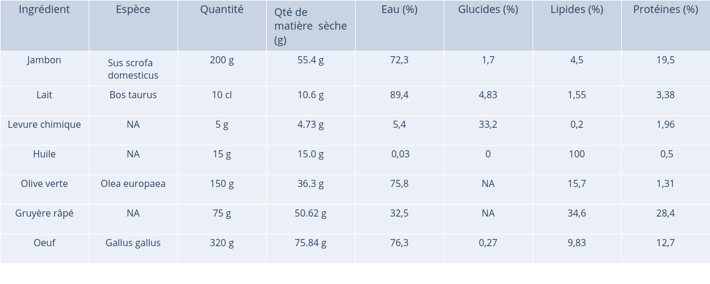
Phylogenetic diversity: 146.0
Weighted phylogenetic diversity: 28.54
Shannon's index: 1.59
Simpson's index: 1.53
Name of the recipe: Hachis Parmentier
URL of the recipe: https://www.marmiton.org/recettes/recette_hachis-parmentier_17639.aspx
Number of ingredients: 12
Number of specie found for the ingredients: 7
Ingredients that haven't match with a species: Herbes de provence, Sel
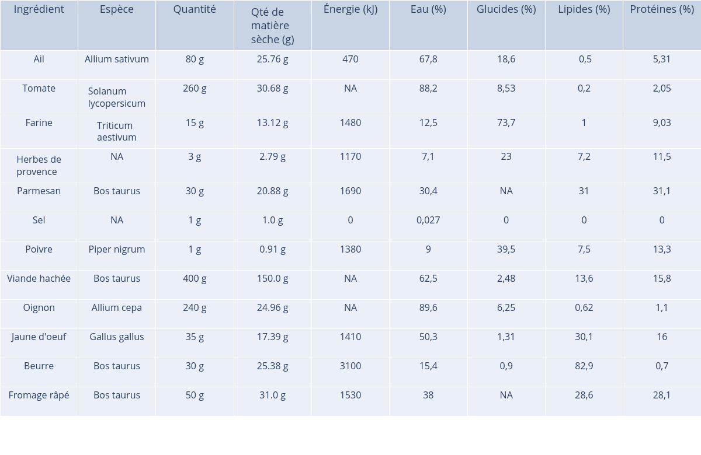
Phylogenetic diversity: 314.44
Weighted phylogenetic diversity: 30.92
Shannon's index: 3.12
Simpson's index: 0.65
Name of the recipe: Boeuf Bourguignon rapide
URL of the recipe: https://www.marmiton.org/recettes/recette_boeuf-bourguignon-rapide_19218.aspx
Number of ingredients: 10
Number of specie found for the ingredients: 7
Ingredients that haven't match with a species: Bouquet garni, Sel
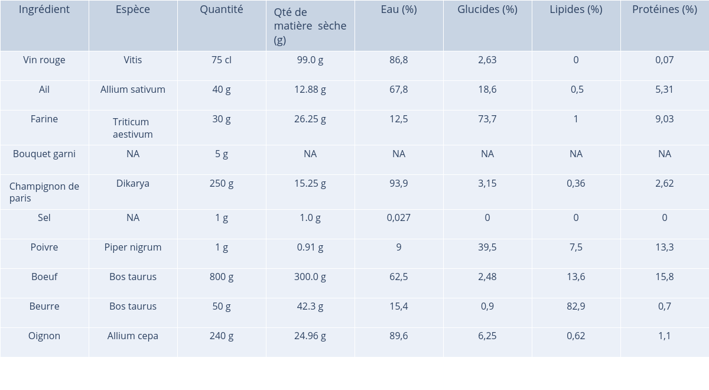
Phylogenetic diversity: 213.71
Weighted phylogenetic diversity: 28.38
Shannon's index: 2.03
Simpson's index: 1.51
Name of the recipe: La Vraie Moussaka Grecque
URL of the recipe: https://www.marmiton.org/recettes/recette_la-vraie-moussaka-grecque_72593.aspx
Number of ingredients: 12
Number of specie found for the ingredients: 9
Ingredients that haven't match with a species: Sel, Farine...
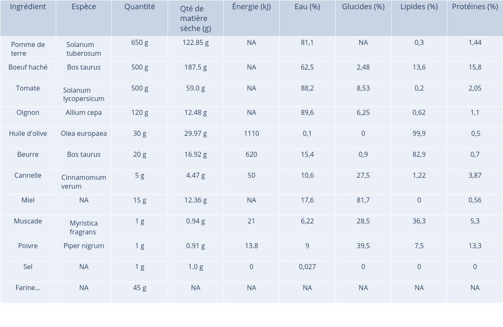
Phylogenetic diversity: 284.22
Weighted phylogenetic diversity: 27.08
Shannon's index: 1.76
Simpson's index: 2.04
Name of the recipe: Amour de saumon en papillote
URL of the recipe: https://www.marmiton.org/recettes/recette_amour-de-saumon-en-papillote_21494.aspx
Number of ingredients: 8
Number of specie found for the ingredients: 7
Ingredients that haven't match with a species: Sel
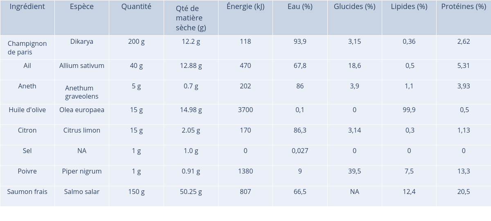
Phylogenetic diversity: 168.67
Weighted phylogenetic diversity: 31.07
Shannon's index: 1.31
Simpson's index: 0.31
Name of the recipe: Velouté de champignons
URL of the recipe: https://www.marmiton.org/recettes/recette_veloute-de-champignons_26749.aspx
Number of ingredients: 10
Number of specie found for the ingredients: 7
Ingredients that haven't match with a species: Bouillon, Sel
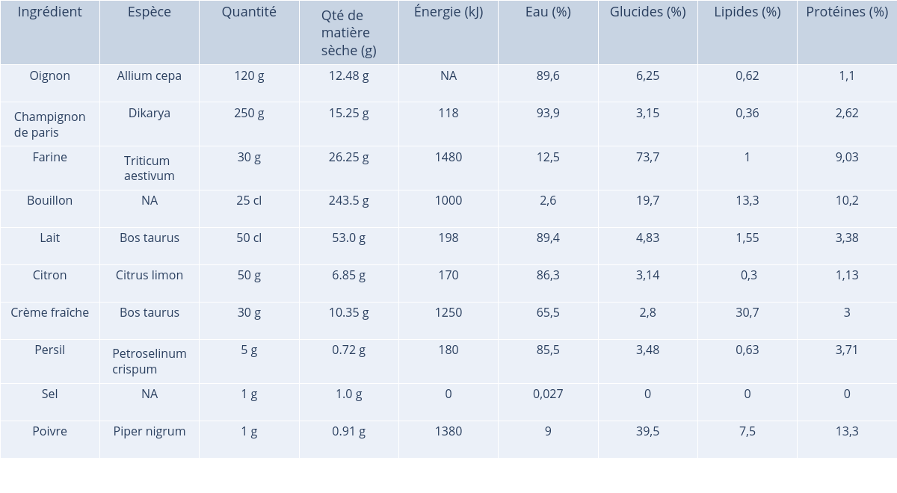
Phylogenetic diversity: 229.14
Weighted phylogenetic diversity: 28.89
Shannon's index: 1.63
Simpson's index: 0.13
Name of the recipe: Bar au four
URL of the recipe: https://www.marmiton.org/recettes/recette_bar-au-four_21505.aspx
Number of ingredients: 9
Number of specie found for the ingredients: 8
Ingredients that haven't match with a species: Sel
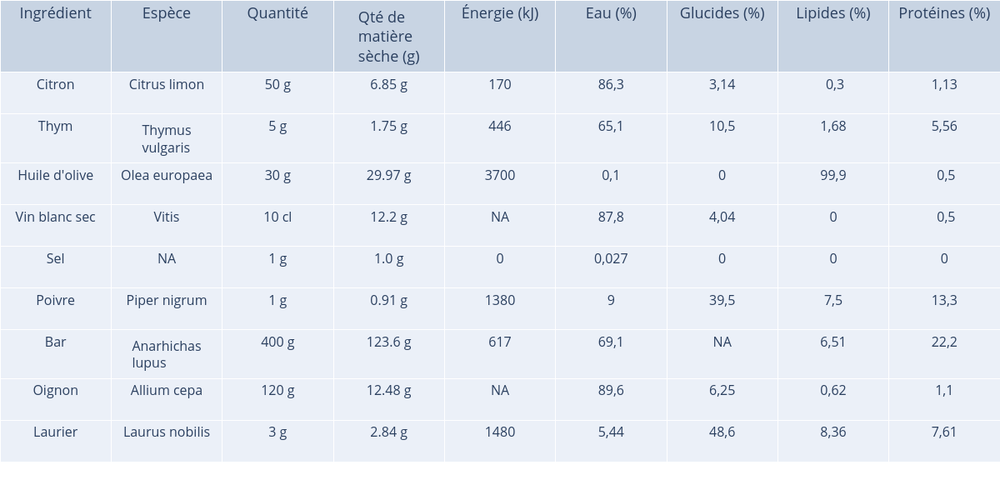
Phylogenetic diversity: 182.86
Weighted phylogenetic diversity: 38.14
Shannon's index: 1.01
Simpson's index: 1.65
Name of the recipe: Filet mignon de porc au Maroilles
URL of the recipe: https://www.marmiton.org/recettes/recette_filet-mignon-de-porc-au-maroilles_12734.aspx
Number of ingredients: 6
Number of specie found for the ingredients: 4
Ingredients that haven't match with a species: Sel
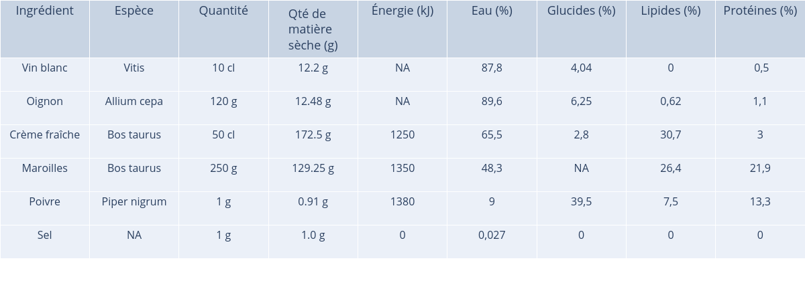
Phylogenetic diversity: 152.0
Weighted phylogenetic diversity: 32.25
Shannon's index: -0.1
Simpson's index: 3.37
Name of the recipe: Chili con carne facile
URL of the recipe: https://www.marmiton.org/recettes/recette_chili-con-carne-facile_15415.aspx
Number of ingredients: 11
Number of specie found for the ingredients: 8
Ingredients that haven't match with a species: Bouillon de boeuf, Sel
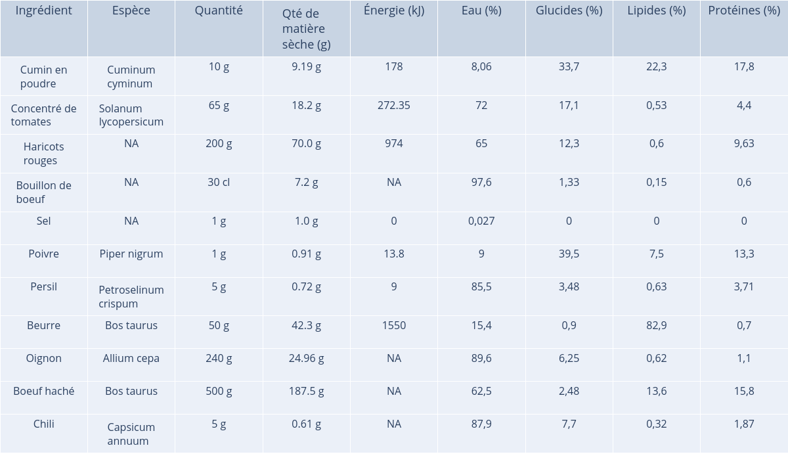
Phylogenetic diversity: 255.5
Weighted phylogenetic diversity: 37.38
Shannon's index: -1.12
Simpson's index: 7.63
Name of the recipe: Couscous poulet et merguez facile
URL of the recipe: https://www.marmiton.org/recettes/recette_couscous-poulet-et-merguez-facile_17751.aspx
Number of ingredients: 11
Number of specie found for the ingredients: 7
Ingredients that haven't match with a species: Épices à couscous, Harissa, Cube de bouillon, Navet
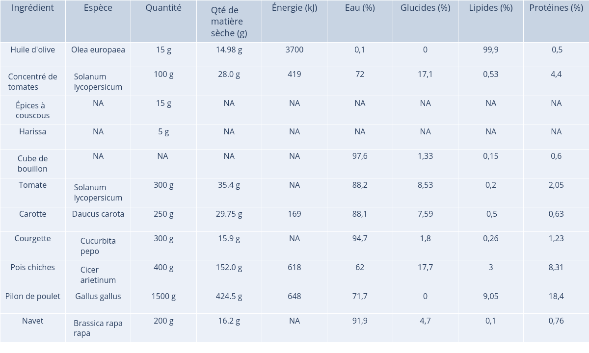
Phylogenetic diversity: 184.0
Weighted phylogenetic diversity: 40.72
Shannon's index: -5.1
Simpson's index: 20.72
Name of the recipe: Carbonades flamandes traditionnelles
URL of the recipe: https://www.marmiton.org/recettes/recette_carbonades-flamandes-traditionnelles_29711.aspx
Number of ingredients: 9
Number of specie found for the ingredients: 6
Ingredients that haven't match with a species: Bouquet garni, Bière brune, Sel
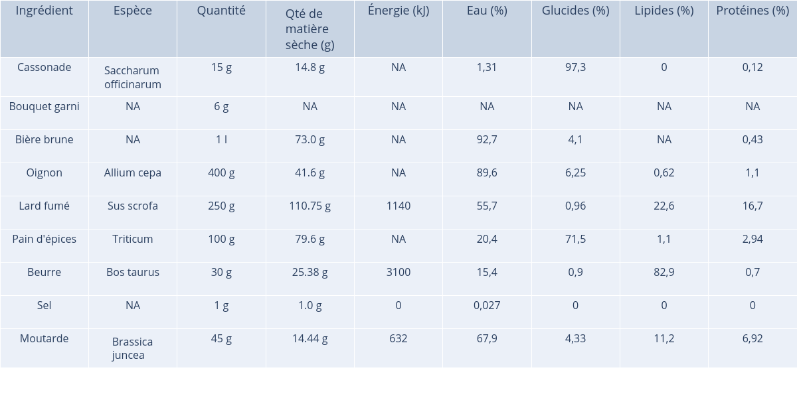
Phylogenetic diversity: 192.8
Weighted phylogenetic diversity: 32.92
Shannon's index: 1.34
Simpson's index: 2.14
Name of the recipe: Quiche lorraine
URL of the recipe: https://www.marmiton.org/recettes/recette_quiche-lorraine_30283.aspx
Number of ingredients: 8
Number of specie found for the ingredients: 5
Ingredients that haven't match with a species: Sel
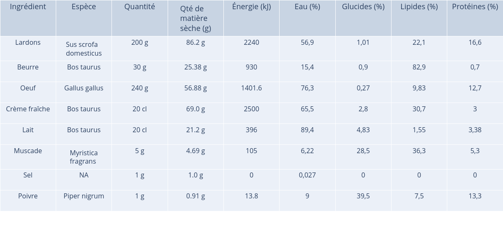
Phylogenetic diversity: 189.33
Weighted phylogenetic diversity: 25.44
Shannon's index: 1.62
Simpson's index: 1.2
Name of the recipe: Endive jambon
URL of the recipe: https://www.marmiton.org/recettes/recette_endive-jambon_19848.aspx
Number of ingredients: 5
Number of specie found for the ingredients: 3
Ingredients that haven't match with a species: Crème fraîche liquide
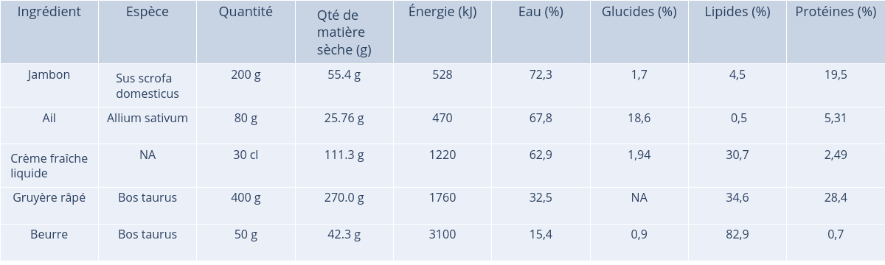
Phylogenetic diversity: 102.0
Weighted phylogenetic diversity: 23.38
Shannon's index: 1.4
Simpson's index: 0.73
Name of the recipe: Poulet basquaise
URL of the recipe: https://www.marmiton.org/recettes/recette_poulet-basquaise_16969.aspx
Number of ingredients: 9
Number of specie found for the ingredients: 7
Ingredients that haven't match with a species: Bouquet garni, Sel
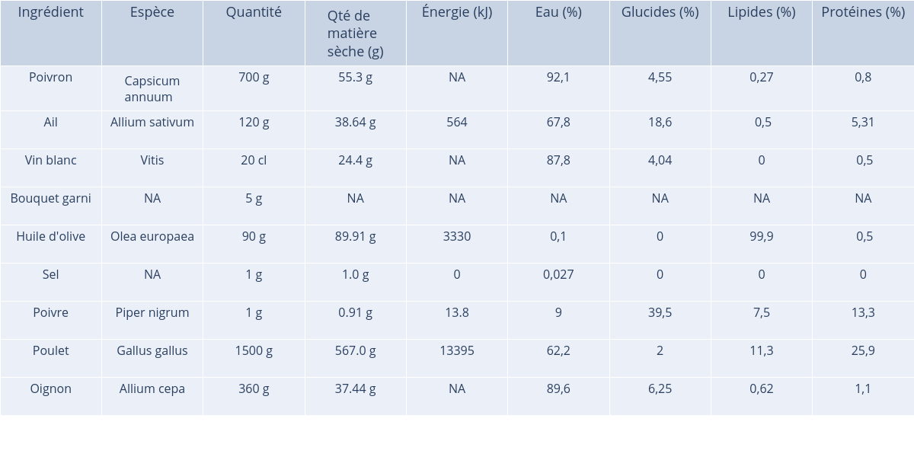
Phylogenetic diversity: 170.0
Weighted phylogenetic diversity: 38.24
Shannon's index: -4.59
Simpson's index: 19.48
Name of the recipe: Tarte thon, tomate et moutarde
URL of the recipe: https://www.marmiton.org/recettes/recette_tarte-thon-tomate-et-moutarde_17226.aspx
Number of ingredients: 8
Number of specie found for the ingredients: 6
Ingredients that haven't match with a species: Sel
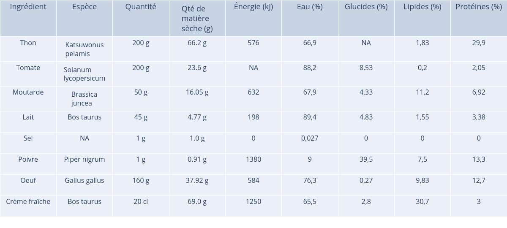
Phylogenetic diversity: 260.0
Weighted phylogenetic diversity: 37.2
Shannon's index: 1.83
Simpson's index: 1.62
Name of the recipe: Lapin à la moutarde maison
URL of the recipe: https://www.marmiton.org/recettes/recette_lapin-a-la-moutarde-maison_15983.aspx
Number of ingredients: 13
Number of specie found for the ingredients: 11
Ingredients that haven't match with a species: Moutarde de dijon, Sel
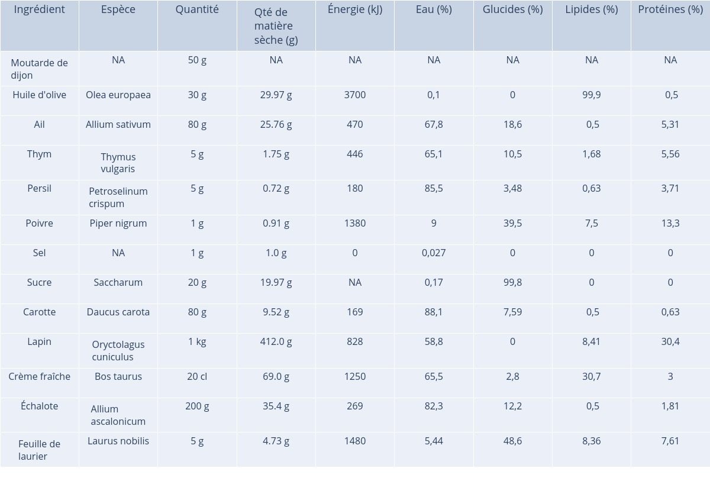
Phylogenetic diversity: 281.6
Weighted phylogenetic diversity: 36.78
Shannon's index: -3.66
Simpson's index: 17.78
Name of the recipe: Quiche tatin
URL of the recipe: https://www.marmiton.org/recettes/recette_quiche-tatin_14309.aspx
Number of ingredients: 8
Number of specie found for the ingredients: 6
Ingredients that haven't match with a species: Sel
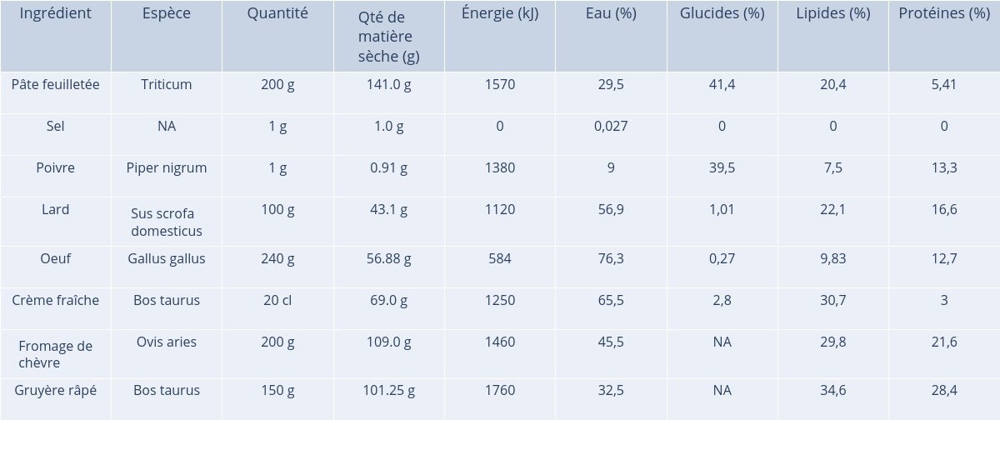
Phylogenetic diversity: 206.0
Weighted phylogenetic diversity: 28.96
Shannon's index: 0.12
Simpson's index: 5.74
Name of the recipe: Boeuf braisé aux carottes
URL of the recipe: https://www.marmiton.org/recettes/recette_boeuf-braise-aux-carottes_13296.aspx
Number of ingredients: 12
Number of specie found for the ingredients: 9
Ingredients that haven't match with a species: Matière grasse, Bouillon de boeuf, Sel
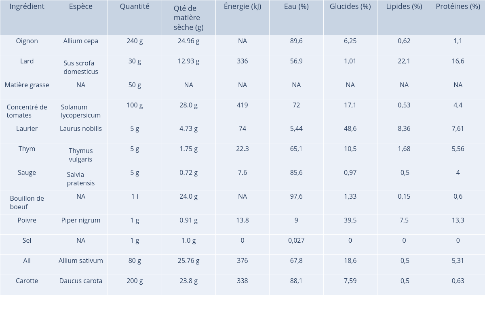
Phylogenetic diversity: 200.5
Weighted phylogenetic diversity: 22.77
Shannon's index: 1.95
Simpson's index: 0.28
Name of the recipe: Chili con carne express
URL of the recipe: https://www.marmiton.org/recettes/recette_chili-con-carne-express_14369.aspx
Number of ingredients: 8
Number of specie found for the ingredients: 7
Ingredients that haven't match with a species: Sel
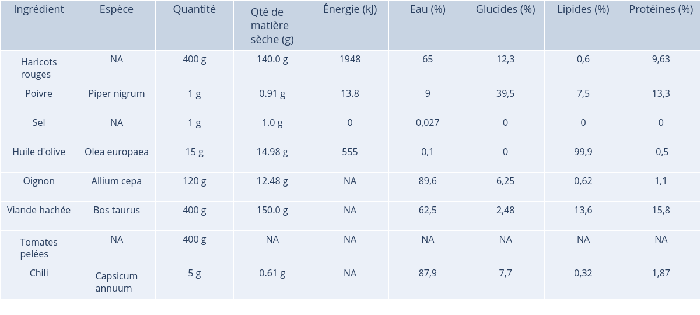
Phylogenetic diversity: 174.0
Weighted phylogenetic diversity: NA
Shannon's index: NA
Simpson's index: NA
Name of the recipe: Tatin de magret de canard au foie gras
URL of the recipe: https://www.marmiton.org/recettes/recette_tatin-de-magret-de-canard-au-foie-gras_17047.aspx
Number of ingredients: 5
Number of specie found for the ingredients: 3
Ingredients that haven't match with a species: Calvados
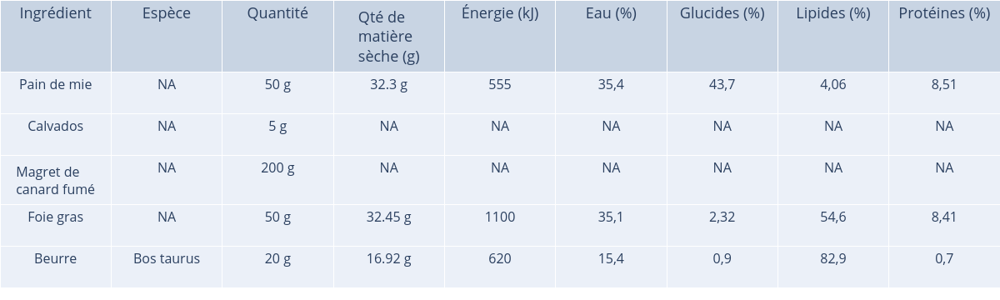
Phylogenetic diversity: 136.67
Weighted phylogenetic diversity: NA
Shannon's index: NA
Simpson's index: NA
Name of the recipe: Rôti de porc de Dijon
URL of the recipe: https://www.marmiton.org/recettes/recette_roti-de-porc-de-dijon_12145.aspx
Number of ingredients: 6
Number of specie found for the ingredients: 4
Ingredients that haven't match with a species: Moutarde de dijon, Sel
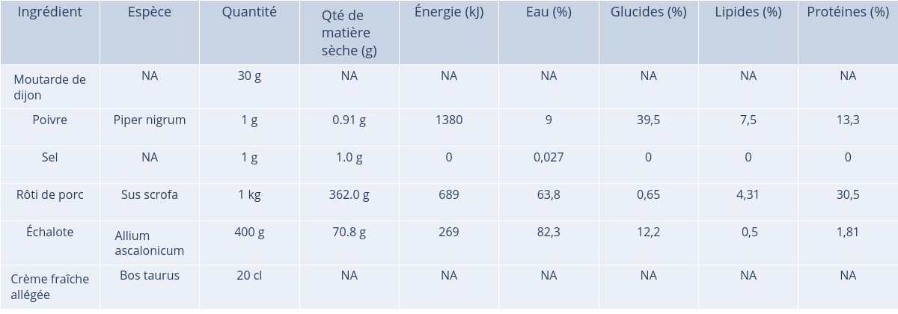
Phylogenetic diversity: 126.0
Weighted phylogenetic diversity: NA
Shannon's index: NA
Simpson's index: NA
Name of the recipe: Tajine d'agneau aux pruneaux
URL of the recipe: https://www.marmiton.org/recettes/recette_tajine-d-agneau-aux-pruneaux_13086.aspx
Number of ingredients: 11
Number of specie found for the ingredients: 10
Ingredients that haven't match with a species: Thé

Phylogenetic diversity: 259.33
Weighted phylogenetic diversity: NA
Shannon's index: NA
Simpson's index: NA
Name of the recipe: Poulet curry et oignons facile
URL of the recipe: https://www.marmiton.org/recettes/recette_poulet-curry-et-oignons-facile_13026.aspx
Number of ingredients: 7
Number of specie found for the ingredients: 6
Ingredients that haven't match with a species: Sel
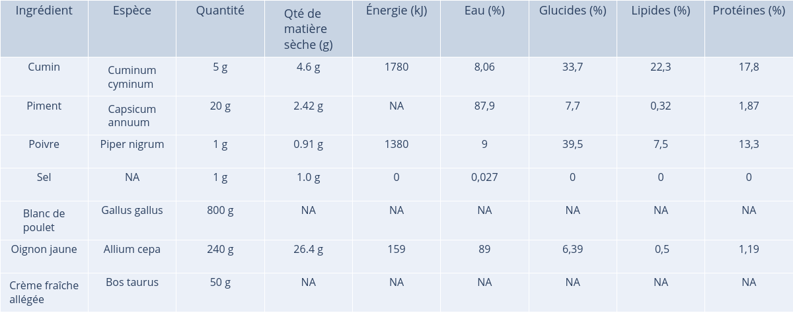
Phylogenetic diversity: 203.6
Weighted phylogenetic diversity: NA
Shannon's index: NA
Simpson's index: NA
Name of the recipe: Blanc de poulet aux endives, champignons et lardons
URL of the recipe: https://www.marmiton.org/recettes/recette_blanc-de-poulet-aux-endives-champignons-et-lardons_35733.aspx
Number of ingredients: 11
Number of specie found for the ingredients: 8
Ingredients that haven't match with a species: Cognac, Sel

Phylogenetic diversity: 269.5
Weighted phylogenetic diversity: 31.75
Shannon's index: 2.05
Simpson's index: 0.49
Name of the recipe: Rôti de cheval au vin rouge
URL of the recipe: https://www.marmiton.org/recettes/recette_roti-de-cheval-au-vin-rouge_44643.aspx
Number of ingredients: 11
Number of specie found for the ingredients: 8
Ingredients that haven't match with a species: Cognac, Sel
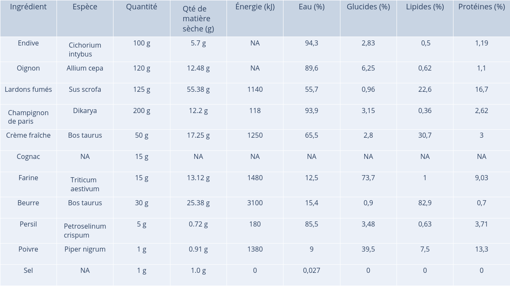
Phylogenetic diversity: 269.5
Weighted phylogenetic diversity: 31.75
Shannon's index: 2.05
Simpson's index: 0.49